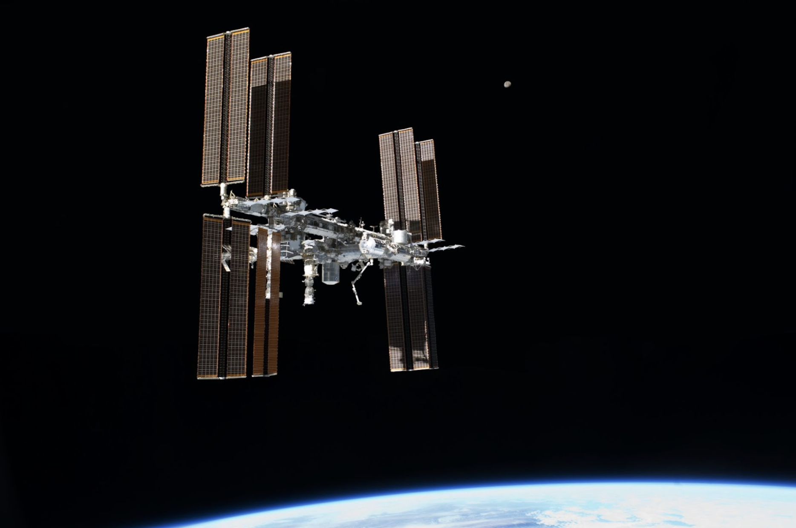
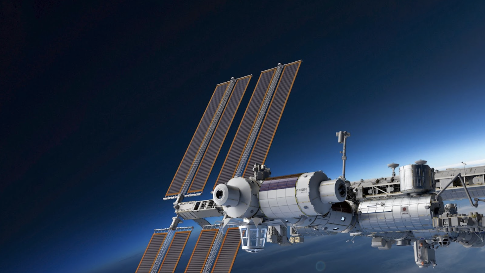
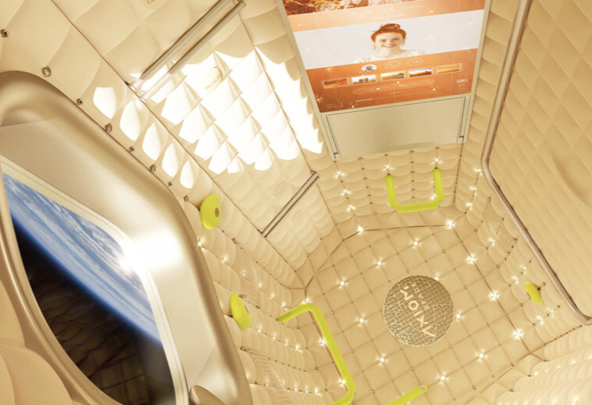

Orbiting hotels and commercial business parks
As we look back on the last decade, 2021 may be heralded as the inflection point for space tourism. Virgin Galactic, Blue Origin, and SpaceX, all commercial ventures, flew “real” people. We expect to see that as flights become more frequent, costs will come down and enable even more tourists to experience the fragility of our presence in this universe. The government-sponsored and -managed International Space Station will give way to commercial orbital platforms through ventures like Axiom Space and the NASA Program Commercial LEO Destinations.
International Space Station in 2011 as seen from the Space Shuttle Atlantis. Credit: NASA
In the next decade, these platforms will provide tourist destinations (like hotels!) with more room to enjoy weightlessness and more time to take in the view. Lower costs of launch coupled with infrastructure provided by the orbital platforms (e.g. power, communications and even life support systems), enable never-before-realized opportunities for entrepreneurs to run start-up ventures in space. Like renting space in a business park, small businesses can both drive and create markets. For example, we could see applications for in-space manufacturing to support on-orbit infrastructure construction or special microgravity and/or vacuum processes that enable mass-scale production of higher quality, higher functioning materials (than if produced on Earth).
 Providing a seamless transition from the International Space Station, Axiom Station will function as an in-space industrial park offering expanded research payload capacity and manufacturing volume, and accommodations for national and private astronauts. Credit: Axiom Space